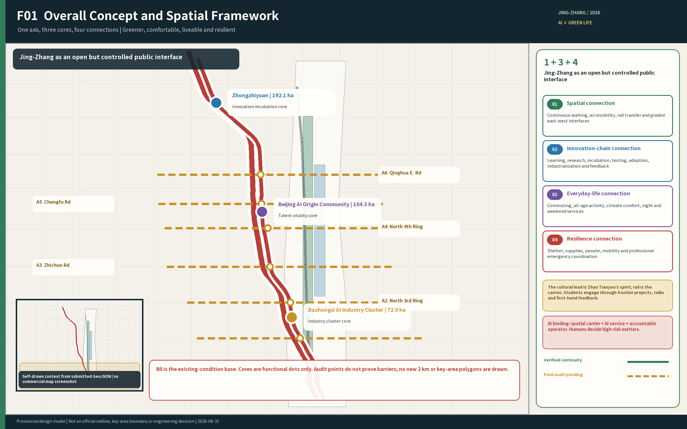
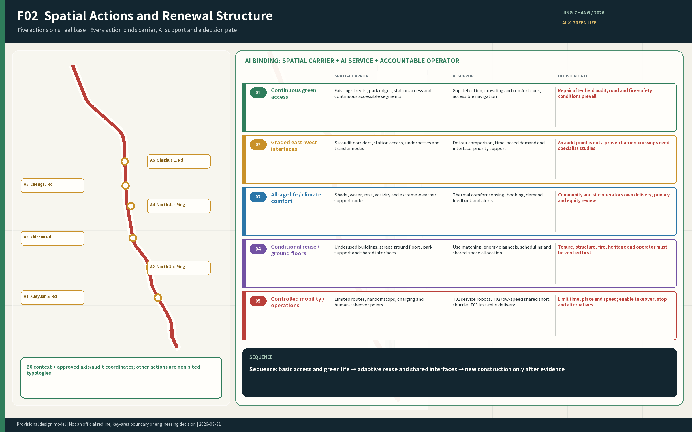
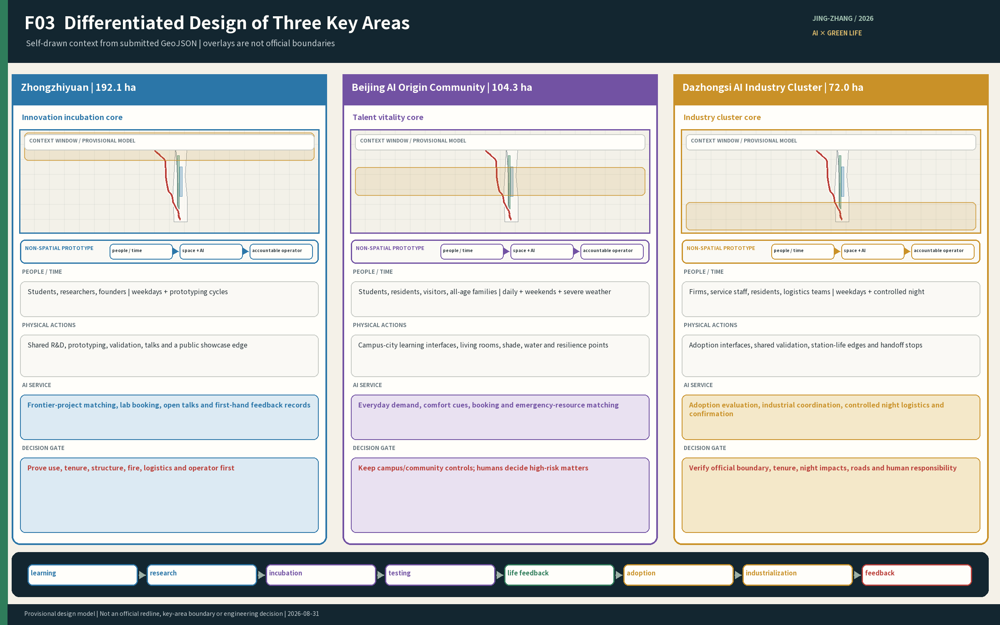
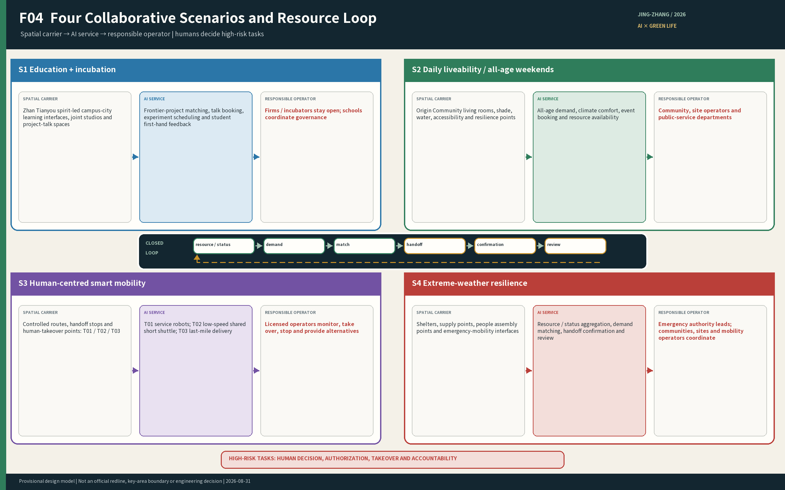
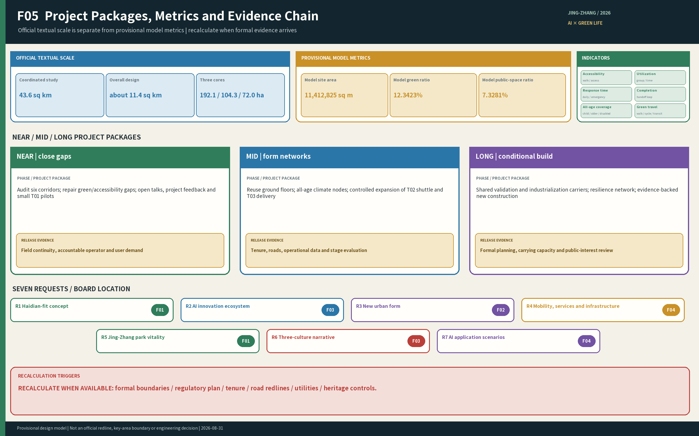

Jing-Zhang Symbiotic Innovation Belt — A Green Public Spine Connecting Everyday Life with an AI Future
The proposal uses the Jing-Zhang Railway Heritage Park as a green public spine and Zhongzhiyuan, Beijing AI Origin Community, and Dazhongsi as three innovation cores. Four forms of connection—spatial, innovation-chain, daily-service, and resilience-resource—allow AI development to improve everyday life.
Jing-Zhang Symbiotic Innovation Belt
Brand and visual identity
“Centennial Jing-Zhang AI Innovation Belt” is the long-term master brand, while “Jing-Zhang Symbiotic Innovation Belt” is the proposal concept name. The mark is built as a living courtyard: an open civic interface surrounds everyday life, with green growth and intelligent connection embedded in the form. Jing-Zhang is not drawn as a train or track; it is translated into a reliable, continuous engineering structure facing the future. Navy, green and engineering gold stand for public trust, liveability and the human centre. The identity can extend to wayfinding, public facilities, annual programmes and digital services, while remaining distinct from dedicated Zhan Tianyou cultural interpretation.
Core application rules use the gold centre dot diameter as 1x, with at least 1x clear space on every side. Minimum width is 32 px on screen and 10 mm in print. Dark backgrounds use a white or monochrome reverse; proportions, colours, and geometry must not be distorted or decorated with shadows. The palette is public-trust navy #142933, ecological-life green #287A5A, and engineering-and-human gold #C58B26. Wayfinding, furniture, and digital terminals use this palette and the open, rounded-corner language without covering public space in repeated logos.
Design Basis and Source List
This proposal responds first to the organizer's announcement, the site package, and the Agent Open-Call Taskbook. It retains the three-level scope, the three key areas, and the seven design requirements. Public material can support positioning, needs analysis, spatial relationships, and conceptual renewal strategies, but cannot prove exact parcel boundaries, ownership, statutory land use, road boundaries, building safety, institutional commitments, or permits for professional testing. These matters remain pending official data or implementation-stage studies. Source Source Source
The design also draws on the project's Jing-Zhang axis maps, facility inventory, online evidence register, five people-time-scenario studies, talent-development chain, and southern-segment design. They support problem definition and option comparison but are not elevated to statutory evidence. Their scope, permitted use, and evidentiary limits are registered in report/narrative.md. Source Depth
The current site and key-area layers are provisional constraints. Figures and metrics must retain official_boundary=false; they must not be described as an official planning boundary, a survey-grade area, or an approval basis. When official polygons become available, land use, roads, green space, public space, buildings, phasing, and metrics must be recalculated together. B0 is the overall mapping base, while the registered detailed map provides local existing-condition evidence. M0 is used only as a reference for the self-defined 2 km facility inventory and not for its key-area divisions. The 2 km extent and the three key-area shapes are working models, not organizer-issued statutory boundaries or official redlines. Spatial data Spatial data Depth
Three-Level Scope Framework
The three levels answer different questions. The 2-kilometre facility-survey band on each side of the railway is not a substitute for the formal scopes.
| Level | Official scale | Primary task | Proposal output |
|---|---|---|---|
| Coordinated Research Area | 43.6 sq km | Define the AI ecosystem, future-city proposition, and Three Zones and Two Wings relationship | Industry and talent chains, concept, case comparison, and operating mechanism |
| Overall Design Area | 11.4 sq km | Establish urban renewal, spatial structure, transport and infrastructure, blue-green network, and Urban Character | Overall Urban Design, renewal projects, and metrics |
| Three Key-Area Detailed Design Areas | 368.4 ha in total | Test functions, spatial form, buildings, mobility, public space, and implementation logic | Three detailed area designs and enlarged nodes |
The coordinated study establishes direction; the overall design translates it into spatial networks and renewal projects; the key-area designs test how these moves enter streets, building interfaces, and daily operations. Only official textual descriptions and area figures are currently available. Exact polygons remain pending, so this document confirms tasks and structure without deriving statutory controls from provisional shapes. Standard Depth Metric
Human-readable taskbook alignment
| Official framework | Proposal response | Verifiable carrier |
|---|---|---|
| Centennial Jing-Zhang Cultural Belt | Green public spine and interpretation of Zhan Tianyou's engineering spirit | Cultural nodes, annual results display, P07 |
| Metropolitan AI Life Experience Belt | All-age daily life, active mobility, resilience, and optional AI services | S01–S05, P02–P04 |
| AI Integrated Innovation Belt | Learning–project–validation–incubation–adoption chain | S06–S07, T01–T03, P05 and P09 |
| Five functions | Full-stack independent innovation; world-class ecosystem; AI+ scenarios; intelligent vibrant city; AI-governance voice | Three-core division, eight-factor flow, ten scenario cards, human gates and exit rules |
| Three Zones and Two Wings | AI Origin Community, Zhongzhiyuan, Dazhongsi; Zhongguancun Technology Service Wing and Xiaoyue River Scenario Empowerment Wing | Three detailed-area designs, professional-service interfaces, public-experience route |
| Agent task | Delivery | Main evidence |
|---|---|---|
| agent.1 Overall concept | One spine, three cores, four connections, green base | F01–F03 and spatial framework |
| agent.2 Innovation ecosystem | Talent chain, eight-factor flow, professional division | Cases, ecosystem flow, regional interfaces |
| agent.3 AI+ scenarios | S01–S07 and T01–T03 | Ten full scenario cards and human boundaries |
| agent.4 Public space and new uses | Three landmarks, six components, separation of testing and daily life | Component library and P02–P05 |
| agent.5 Culture and international expression | Zhan Tianyou narrative, bilingual package, brand rules | Mark, bilingual proposal, P07 |
| agent.6 Long-term operation | Annual programme, developer community, scenario opening, conversion | Nine-project and operating ledgers |
Coordinated Research Area: Industry and Future City Research
Haidian already contains a dense mix of universities, research institutes, companies, communities, transit, and public green space. The planning problem is neither to create another isolated AI park nor to make AI compensate for every facility gap. It is to turn dispersed resources into relationships that people can enter, use, and respond to, so AI development improves commuting, learning, social contact, recreation, and resilience during extreme weather.
The proposal adopts “one spine, three cores, with green space as the base.” The Jing-Zhang Railway Heritage Park forms the continuous green public spine. Zhongzhiyuan, Beijing AI Origin Community, and Dazhongsi respectively support innovation incubation, talent vitality, and industry clustering. Jing-Zhang is an open but controlled public interface, not a single linear channel through which every project must pass; projects are also not forced to move through the three areas in geographic order. Together, the areas support a development chain of frontier learning, project practice, engineering validation, incubation, and industrial application. Source Depth
The proposal establishes four forms of connection:
1. Spatial connection: improve north-south walking and cycling continuity, east-west entrances, transit interchange, crossings, accessibility, and waiting conditions, helping mend the spatial separation created or continued by the railway corridor. 2. Innovation-chain connection: connect universities, parks, firms, and community needs through public lectures, joint briefs, cross-campus studios, shared prototyping, professional validation, and industry services. Institutions do not need to remove their management boundaries. 3. Daily-service connection: connect the basic facilities, public living rooms, and time-shared services needed by residents, students, employees, families, older people, children, night-shift workers, and outdoor service workers. 4. Resilience-resource connection: during heat, heavy rain, snow and ice, or strong winds, connect shelter spaces, supplies, facilities, people, mobility capacity, and professional emergency interfaces. AI assists discovery and matching; accountable organizations confirm and carry out actions.

Together, these connections address the seven requirements: a Haidian-specific development concept; an AI Innovation Ecosystem; an AI-adapted urban form; transport and public services; an active Jing-Zhang Railway Heritage Park; integration of the spirit of Zhan Tianyou with Zhongguancun and AI culture; and AI-Enabled Scenarios in transport, healthcare, education, robotics, autonomous mobility, and unmanned delivery. Standard Source
Five international cases test how space can support an innovation chain; their building forms and scale are not copied:
| Case | Transferable mechanism | Jing-Zhang application | Condition that cannot be copied |
|---|---|---|---|
| Singapore one-north / LaunchPad | Flexible incubation, shared equipment, staged testing, and ground-floor display | At Zhongzhiyuan, establish an incubation-prototyping-controlled testing-display-adoption ladder | Do not assume that facilities and data across multiple owners are automatically shared. Source |
| France Paris-Saclay | Innovation education across career stages, proof of concept, temporary activation, and long-term operation | The three cores form a learning-research-validation-incubation-adoption chain | Do not copy a large greenfield campus or claim cross-campus cooperation without operators and agreements. Source |
| Toronto MaRS / Vector Institute | A professional platform connects research, talent, commercialization, and adoption while separating public events from controlled R&D | The Jing-Zhang public interface hosts lectures, display, experience, and social feedback | Openness does not remove data, intellectual-property, or testing-space boundaries. Source |
| Helsinki Maria 01 | Existing buildings receive an operator, admission and graduation rules, and community benefits before streets and parks are incrementally improved | Reuse links an urban-problem bank with university mentoring and company validation | A building that appears idle is not assumed to have resolved tenure, use, structure, or fire-safety conditions. Source |
| Pittsburgh Hazelwood Green / CMU | Industrial heritage, controlled robotics testing, public education, and green space are layered | High-risk testing stays in professional sites; the green corridor hosts only low-risk demonstration and feedback | Do not copy a large brownfield test site or assume that technology occupancy automatically creates community benefit. Source |
The shared mechanism is a professional division of labor across the three key areas, an open but controlled public interface along the Jing-Zhang green spine, and a long-term operating platform that organizes universities, companies, communities, and city agencies into an accountable feedback loop.
External collaboration is expressed as an interface, not as a signed partnership. Proposed exchanges include youth briefs and community feedback with AI North Latitude Community; research talent and validation needs with Future Science City; research translation and evaluation experience with Huairou Science City; intelligent manufacturing, robotics, vehicle-industry and adoption feedback with Beijing E-Town; and talent, manufacturing, and market resources across Jing-Jin-Ji through the Zhongguancun Technology Service Wing. Every interface remains proposed and subject to agreement; none is a promise of facility access, funding, investment attraction, procurement, or regional agreement.
Overall Design Area: Urban Renewal and Regulatory-Plan-Level Urban Design
The overall spatial system has four layers. The green-space layer secures walking, cycling, accessibility, ecology, shade, drainage, and rest. The three-core innovation layer supports the talent and outcome-development chain. The daily-life layer tests the plan through commuting, lunchtime, evening, weekend, and extreme-weather scenarios. The AI resource-coordination layer connects resource status, needs, and accountable actors without becoming a fourth enclosed district.
A public report republished by the Beijing Municipal Government portal on 12 August 2026 states that the corridor street-level regulatory plan received approval and describes Dazhongsi and Wudaokou as two centers, walking and cycling connections, existing-building renewal, and public-service directions. This participant-added web source is not registered as a formal source in the repository, so the proposal uses it only as background and not as a statutory boundary, parcel control, or implementation commitment. Physical interventions are consolidated into five types: maintaining and completing the continuous green Walking and Cycling Network; building east-west interfaces and interchange nodes; providing all-age public-life nodes; adapting existing space with shared-use interfaces; and providing professional validation and logistics nodes. Operations include time-based access rules, a public narrative of Zhan Tianyou's spirit, all-age activities and courses, and an urban resource-coordination system. Implementation first verifies and repairs existing continuity, safety, ecology, and basic services; it then adapts existing space and professional interfaces; new buildings and their scale are decided only after land-use, ownership, and demand evidence is available. Source Depth Depth

The urban resource-coordination system shares seven functions: resource inventory, status verification, demand intake, resource matching, task handoff, outcome confirmation, and review. AI may assist search, analysis, prompts, translation, and matching. Authorized people decide access, admission, transport takeover, emergency response, service activation, and reopening. Basic movement, fixed signs, human assistance, and safety procedures continue when AI, data, or networks fail.
Detailed Design of Key Areas
The three key areas are different urban environments within one innovation chain and should not reproduce a single generic “AI park” form. Their names, roles, and area figures come from official text. The current provisional key-area polygons cannot support detailed-design boundaries; the provisional Dazhongsi polygon does not contain Dazhongsi Station and has been withdrawn from spatial derivation. Source Source
Zhongzhiyuan AI Independent Innovation Acceleration Area — Innovation Incubation Core, 192.1 ha
Zhongzhiyuan is the innovation-incubation core for engineering development, shared prototyping, professional validation, and pre-incubation. Its spatial priorities are a low-carbon R&D environment, professional workshops, controlled testing, park logistics, and a public-facing urban interface. Companies and incubated teams continuously offer students frontier lectures, real projects, testing opportunities, and first-hand feedback. Professional testing remains in spaces with clear land use, ownership, safety controls, and operational responsibility; the park edge supports public learning, explanation of results, and user feedback without treating ordinary visitors as default test subjects.
Beijing AI Origin Community — Talent Vitality Core, 104.3 ha
The AI Origin Community is the talent-vitality core for frontier learning, problem discovery, cross-campus projects, all-age daily life, and everyday innovation exchange. Campus-city learning interfaces, rotating lectures by companies and incubated teams, cross-campus studios, public living rooms, and time-shared services allow students to encounter current technical directions, engineering failures, and user feedback earlier. During extreme weather it differentiates support for older people, children, people with reduced mobility, and night-shift and outdoor workers through shelter, water, supplies, fallback routes, and staffed service points. Campuses, parks, and communities retain necessary management boundaries; cooperation occurs through public interfaces, booking rules, and responsibility agreements.
Dazhongsi AI Industry Cluster — Industry Clustering Core, 72.0 ha
Dazhongsi is the industry-clustering core for product integration, market validation, enterprise services, industrialization, and mature applications. Controlled night logistics uses only designated back-of-house routes, loading, and handover nodes; it does not displace quiet residential evenings or basic movement. Before an official boundary is available, the design uses a boundary-independent framework: the Jing-Zhang green public spine remains the everyday-life and ecological base; Dazhongsi Station is a transit and industry-service study anchor, but this concept-stage role does not mean that station space can serve as a public urban crossing; Source and the Xueyuan South Road daily-service interface and North Third Ring transport-industry interface have equal importance. A public web page locates Shunxin Park at Dazhongsi East Road and the North Third Ring. The proposal treats it as a public-space background point requiring site verification and does not infer a continuous link to the Jing-Zhang spine. Source Candidate east-west links connect communities, universities, and public services across the railway corridor. A report published on 30 July 2026 described terraces, an accessible ramp, and other North Third Ring gateway works while still saying Phase II was nearing completion. The proposal therefore uses the gateway only as background for a north-south connection requiring verification, not as evidence of an east-west crossing of Metro Line 13. Source A 2024 public reply from the Haidian District Landscaping Bureau stated that Line 13 obstructed access between the park and nearby communities. The proposal therefore treats a convenient cross-line connection as a problem requiring professional verification and does not claim that an approved or completed crossing exists. Source The current stage may define structural relationships, node types, and planning actions, but not land-use shares, building quantities, or parcel-level retain-renovate-demolish decisions. Land-use closure, metric recalculation, and complete detailed design follow after the official boundary is obtained. Depth

AI Innovation Ecosystem, Personas, and AI+ Scenarios
The proposal serves at least five groups: university students and early-career researchers; start-up teams and company employees; existing residents and families; older people, children, and people with reduced mobility; and night-shift, delivery, maintenance, and other urban service workers. International visitors, developers, and business partners are cross-cutting users, but they do not displace the objective of improving life for existing residents.
The ecosystem defines how eight factors enter a project, are used, and return accountable results:
| Factor | Admission threshold | Role across the three cores | Feedback and accountability |
|---|---|---|---|
| Land | Official boundary, use, tenure, and approval | Supports reviewed renewal projects | Missing condition keeps a proposal outside the construction list |
| Space | Voluntary agreement, hours, capacity, safety, accessibility | Courses, projects, validation, public services | Use, failure, and complaint review |
| Industry | Real problem, confidentiality, accountable owner | Frontier courses, prototypes, validation, adoption | Result, failure cause, and adoption feedback |
| Capital | Budget, conflict-of-interest, performance review | Reviewed public or innovation projects | Spending, milestone, and stop-condition record |
| Talent | Voluntary participation, fitness, rights, time | Lectures, briefs, validation, co-creation | Learning result, contribution, and right to exit |
| Compute | Account, cost, energy, security, purpose limits | Approved R&D, education, services | Usage, cost, failure, and service-level review |
| Data | Lawful source, purpose limitation, minimization, access control | Minimum necessary AI service only | Logs, human review, correction, deletion |
| Scenarios and professional services | Risk tier, permit, insurance, takeover, alternative service | Controlled experience, testing, public service, adoption | Incident report, stop, recovery, public feedback |
The common flow is need or event → verified resource state → admission and accountability → AI-assisted matching → execution by an authorized actor → outcome confirmation → review. Resources without an agreement remain unavailable for dispatch.
| Scenario | Primary users and time | Spatial and service move | AI role and human boundary |
|---|---|---|---|
| S01 Peak commute | Residents, students, workers, cyclists on weekday peaks | Continuous routes, crossings, interchange, parking, accessibility | Status and alternative-route information; people retain traffic management and response |
| S02 Lunchtime innovation exchange | Students, researchers, start-ups, residents at lunchtime | Public living rooms, meeting points, time-shared service windows | Resource discovery, booking, and translation; institutions decide access |
| S03 Evening life and quiet | Residents, young people, night workers in the evening | Quiet routes home, basic services, time-zoned activity areas | Open/fault status; human staffing and fixed signs remain |
| S04 Weekend all-age activity | Families, children, older people, visitors on weekends | All-age routes, rest points, nature education, courses | Opt-in age-appropriate interpretation; no cross-scenario profiles of children |
| S05 Extreme-weather resilience | Everyone before, during, and after events, with priority for vulnerable and outdoor users | Shelter, water, supplies, fallback routes, staffed service points | Resource matching and outcome tracking; no replacement of warnings, rescue, or medical judgment |
| S06 Frontier awareness | University students and young researchers during terms | Rotating company lectures, product demonstrations, failure reviews | Organize questions and feedback; teachers and practitioners approve content |
| S07 Project practice | Students, mentors, firms, and community problem owners during terms | Joint studios, real briefs, low-risk prototypes | Team and information support; mentors and problem owners jointly review |
| T01 Service-robot validation | R&D teams and professionals in booked test periods | Indoor, building-interface, and enclosed-module tests | Performance and incident records; human takeover, immediate stop, and site recovery |
| T02 Shared autonomous short-distance shuttle validation | Users with specific interchange needs in controlled periods | Controlled validation in the north, conditional application in the south, walking priority in the middle | Vehicles are not limited to cars; permits, takeover, stop, and substitute service remain human responsibilities |
| T03 Unmanned last-mile delivery validation | Operators and recipients during park logistics periods | Controlled logistics routes, loading, and handover nodes | Dispatch and status prompts; human takeover is always available and public movement has priority |
The scenarios use a shared resource-coordination back end but retain different access rules, data permissions, human review, and exit conditions. AI creates value by organizing dispersed people, spaces, supplies, facilities, and mobility capacity, thereby shortening resource discovery and cross-organizational coordination. It does not replace physical space, public institutions, or professional staff. Standard Spatial data
Full operating cards for the ten scenarios
- S01 Peak commute: weekday residents, students, staff, and cyclists trigger assistance through crowding, faults, or an accessibility break. AI uses verified opening state, crowd ranges, weather, and reports to explain alternatives. Transport and site operators confirm; fixed signs, human guidance, and ordinary transit remain. Expired or conflicting data and emergency takeover stop recommendations. Metrics: discontinuities, detour time, closure time.
- S02 Lunchtime innovation exchange: a student, researcher, start-up, or resident asks for a meeting, advice, or space. AI uses published events, bookable hours, accessibility, and language preference to draft candidates, translation, and booking. The institution decides access; phone, reception, and a public calendar remain. Refusal, full capacity, or withdrawal exits. Metrics: valid match, attendance, cancellation reason.
- S03 Evening life and quiet: lighting, opening, or equipment failure triggers a quiet route-home and basic-service response. AI consolidates status, fault tickets, transit, and noise complaints. Community, property, and service operators respond; fixed night signs, staffed points, and telephone remain. High risk transfers to people. Metrics: alternative activation, recovery time, repeated complaints.
- S04 Weekend all-age activity: families, children, older people, and visitors opt into all-age routes, nature learning, or Zhan Tianyou interpretation. AI uses capacity, accessibility, weather, and a voluntary age band for interpretation, lower-crowd routes, and rest suggestions. Organizers approve and staff the activity; paper and human interpretation remain. Users may exit at any time and no cross-scenario child profile is built. Metrics: reach, rest accessibility, exit reason.
- S05 Extreme-weather resilience: authoritative warnings or human reports trigger shelter, water, supplies, gathering, fallback routes, and emergency mobility. AI uses only authoritative warnings and verified resources to identify gaps, suggest matches, prepare handovers, and track outcomes. Emergency authorities decide dispatch; broadcasts, patrols, fixed signs, and telephone chains remain. Command takeover, conflicting data, or resource failure stops automatic matching. Metrics: response, handover completion, priority-user feedback closure.
- S06 Frontier awareness: an approved term-time lecture, product demonstration, or failure review is triggered by a published event or course need. AI uses approved speakers, topics, capacities, and materials for question clustering, background retrieval, and anonymized feedback. Teachers, speakers, and site operators approve. Unclear rights, withdrawal, or failed review cancels. Metrics: student reach, response rate, project conversion.
- S07 Project practice: a real brief confirmed by a company or community problem owner triggers a joint studio and low-risk prototype. AI uses published problems, skills, time, and spatial conditions for team suggestions, source indexing, and feedback lists. Mentors and problem owners jointly review; manual team formation and offline review remain. Withdrawal, increased risk, or lack of team consent exits. Metrics: completion, owner feedback, student contribution.
- T01 Service-robot validation: after risk tiering, operator, and takeover are confirmed, R&D teams, professionals, and voluntary testers use indoor, building-interface, or enclosed modules. AI records device state, scripts, obstacle events, and takeover. A competent test operator is responsible and human service remains. Boundary breach, communication fault, person intrusion, or takeover failure causes immediate stop. Metrics: takeover, recovery, incident rate.
- T02 Low-speed shared shuttle validation: it starts only after a specific supplementary need, permit, safety case, insurance, and substitute service are confirmed; the north tests first, the south may later apply, and the middle retains walking priority. AI assists dispatch, arrival state, and alerts. An approved operator monitors and takes over; walking, accessibility, transit, and human shuttle remain. Boundary, speed, perception, weather, or human thresholds stop operation. Metrics: takeover, punctuality, substitute activation, complaints.
- T03 Unmanned last-mile delivery validation: after tenure, fire safety, route, and human accountability are confirmed, it uses controlled back-of-house hours, routes, loading, and handover points. AI uses minimum order data, device state, route opening, and handover confirmation for dispatch and incident tickets. Logistics and site operators share responsibility and human delivery remains. Blocking the only accessible route, conflict with people, cargo anomaly, or failure stops operation. Metrics: handover, takeover, movement interference.
Land Use, Building Scale, and Retain-Renovate-Demolish Strategy
Land and building decisions follow the sequence “retain effective uses—adapt reusable space—add public and professional facilities only where a demonstrated gap exists.” Street-facing ground floors, park support space, existing R&D offices, inefficient transport edges, and time-share candidates are investigated first. Without evidence on current use, ownership, structural safety, and operating intent, a building is not called an idle factory and is not assigned a definite demolition or renovation decision. Standard Depth
Total floor area, Floor Area Ratio, Building Coverage Ratio, Building Height, setbacks, and new housing quantities remain pending official Regulatory Detailed Planning and existing-condition data. Talent housing policy first improves access to existing housing, rental resources, commuting, childcare, healthcare, night services, and public space. New housing is considered only when the scale of demand, land conditions, and public-service capacity are demonstrated. Metric Depth
Transport, Rail, Municipal Infrastructure, and Public Services
Walking, cycling, accessibility, and rail interchange form the transport base. The plan first verifies and repairs north-south continuity and east-west crossings, then organizes metro–park–campus–innovation-park–community interchange nodes. Intelligent mobility is not synonymous with cars: T01 service robots, T02 low-speed shared short-distance shuttles, and T03 last-mile delivery each require controlled space, an operating responsibility, and human takeover. Shared autonomous short-distance shuttles serve only specific north-south needs that walking and conventional transit cannot adequately meet. The proposal does not create a continuous car-testing corridor through the park and does not remove trees, reduce green space, or occupy the only accessible route for testing. Spatial data Depth
Public-service nodes combine seating, shade, drinking water, toilets, care facilities, first aid, charging, parking, and human assistance according to user and time needs, rather than reproducing a standard “smart kiosk.” New infrastructure includes demand-backed edge computing, low-intrusion sensing, communication, energy, and data interfaces, coordinated with drainage, lighting, fire safety, and existing municipal systems. Depth

Blue-Green Network, Public Space, and Urban Character
The Jing-Zhang Railway Heritage Park is first a green public space for everyone and only then a setting for innovation display and technical testing. Continuous walking and cycling, east-west entrances, shade and drainage, quiet rest, all-age activity, and ecological repair create an everyday green spine. Professional tests, temporary events, and new facilities must not reduce effective green space, damage mature trees, or block basic movement. Spatial data Spatial data Depth
The cultural narrative foregrounds the spirit of Zhan Tianyou rather than repeating generic railway imagery. Authentic remains and engineering sources explain independent innovation, context-responsive design, engineering reliability, responsibility, and public service, and connect them to independent AI R&D, safety evaluation, green resilience, and the responsibilities of young engineers. Student learning prioritizes AI frontiers and industry practice, with Zhan Tianyou's spirit as a continuing engineering value; families and park visitors receive a fuller public interpretation.
Three landmark prototypes are proposed: the southern AI Industry and Community Gateway, the central Campus-City Co-Creation Living Room, and the northern Engineering Incubation Co-Creation Workshop. They create public interfaces between industry and daily life, campus and city, and R&D and validation. Contribution displays, annual results, and the spirit of Zhan Tianyou can establish public anchors for achievement display and engineering-value learning. Exact sites and construction forms remain pending boundary, heritage, ownership, and operating conditions. Standard
Six combinable public-space components allow small construction steps, operating tests, and evidence-led iteration: (1) shaded active-mobility module with trees, permeability, rest, and accessibility; (2) east-west interface with visible entrance, crossing, direction, and night safety; (3) all-age daily-life module with water, seating, toilet, care, first aid, and human help; (4) campus-city co-creation module with lecture, work surface, display, and booking; (5) professional validation module with separation, monitoring, takeover, stop, and recovery; and (6) resilience module with water, supplies, shelter, communication, and human handover. Each records everyday use, AI enhancement, non-AI fallback, accountable operator, and stop condition. A smart device alone is not treated as urban design.
Renewal Projects, Implementation Policy, and Phasing
The first project set contains nine outputs: an urban resource-coordination system; an all-weather walking, cycling, and accessibility network; metro–park–campus–innovation-park interchange nodes; an all-age basic-service network; institutional time-sharing and professional service windows; day-night operating rules; a public narrative connecting Zhan Tianyou with contemporary innovation; all-age activities and courses; and controlled validation for robots, autonomous mobility, and unmanned delivery. Phasing proceeds from reversible near-term repairs, through medium-term adaptation of existing space, to long-term work after official boundaries and regulatory controls are available. Governance maps R1–R7, without changing their official meanings, to project accountability, evidence, and review. Each project has one primary requirement and records users, time, spatial action, AI role, non-AI fallback, accountable organization, metric, and prerequisites. Spatial data Depth
| Project | Proposed lead / collaborators | First verifiable output | Start/stop gate | Core metric |
|---|---|---|---|---|
| P01 Resource coordination | Public-service digital operator / site and professional agencies | Need–resource–handover–confirmation–review prototype | Unverifiable state is not matched | Match and closure time |
| P02 All-weather active mobility | Road and park / community and transport professionals | Interface audit and reversible repair | Never occupy the only accessible route | Breaks and detour time |
| P03 Transit–park–campus–park interchange | Transport and site / universities and parks | Service inventory and alternatives | No construction with unclear tenure or safety | Transfer time and continuity |
| P04 All-age basic services | Community and public services / park and property | Shade, water, rest, toilet, care, human-help inventory | No AI without basic fallback | Coverage and recovery |
| P05 Time-sharing and professional windows | Institution / university, park, service wing | Access, booking, accountability templates | No voluntary agreement, no opening | Booking fulfillment |
| P06 Day-night operation | Park, community, industrial park / transport and property | Time zones, quiet rules, degradation table | Complaint or safety threshold degrades service | Complaint closure and fallback activation |
| P07 Zhan Tianyou and innovation narrative | Culture and education / university, company, public | Evidence–engineering choice–current responsibility framework | Unclear history or rights is removed | Understanding feedback |
| P08 All-age programmes | Education and events / community, companies, incubators | Rotating lectures, nature learning, project open day | Capacity, safety, or review failure cancels | Reach, return, project conversion |
| P09 T01–T03 validation | Approved test operator / site, transport, fire, insurer | Risk gates, takeover, stop, alternative, recovery templates | Any permit or takeover failure stops | Incident, takeover, recovery time |
Near-term work prioritizes reversible, low-risk walking and cycling repairs, basic services, public interfaces, and resource inventories. The medium term adapts existing spaces, key-area public interfaces, and controlled validation environments. The long term uses official boundaries, Regulatory Detailed Planning controls, demand data, and operational evaluation to decide new buildings, complex transport, and major public-space works. The annual program combines frontier lectures, open briefs, result exhibitions, developer co-creation, public experience, and international exchange; outputs feed back into education, testing, incubation, industry services, and spatial improvements. Depth
Long-term operation has six workstreams. The annual AI-and-urban-life programme records delivery, user reach, and problems converted to projects; the developer community records active projects, mentor response, and reviews; scenario opening records admission time, incidents, and recovery; public experience records accessibility, understanding, exits, and complaint closure; international communication records bilingual consistency, citation accuracy, and corrections; conversion records validation–incubation–adoption stages and failure causes. Every stream provides complaint, stop, and exit routes.
Inclusion begins with six collectable baselines rather than invented targets: accessible-route breaks; weekly hours with reachable human assistance; available shade, water, and rest coverage; time from night failure to substitute service; priority-user feedback closure; and time from an authoritative extreme-weather trigger to completed resource handover. Sources are inspections, rosters, fault tickets, anonymous cases, and human-confirmed drills or events; no cross-scenario child profile is created.
Metrics, Area Recalculation, and Compliance Matrix
Official textual figures are 43.6 sq km for the Coordinated Research Area, 11.4 sq km for the Overall Design Area, and 192.1 ha, 104.3 ha, and 72.0 ha for Zhongzhiyuan, Beijing AI Origin Community, and Dazhongsi. Provisional overall-area geometry is used only for package generation, visualization, and overall design-model calculations. Provisional key-area polygons do not support key-area area, land-use, or development metrics; the Dazhongsi placeholder has been withdrawn because of its spatial mismatch. Green-space ratio, public-space ratio, and building footprint calculated from the provisional model test layer relationships and formulas only; they are neither statutory controls nor official existing-condition statistics. Metric Metric Metric
Metrics fall into three groups: spatial metrics recomputed from final geometry; control metrics dependent on official Regulatory Detailed Planning, infrastructure, and ownership data; and performance metrics calibrated through operations. After formal design layers are complete, the next pass recalculates site area, green-space ratio, public-space ratio, building footprint, walking continuity, project counts, and scenario nodes. Talent density, industry performance, resource-response time, and user satisfaction receive formulas and collection methods before any unsupported target values. Depth

Risk, Copyright, and Compliance
Principal risks are the absence of exact official boundaries and Regulatory Detailed Planning data, the limited age and granularity of online evidence, unconfirmed institutional access and operators, permits and safety for professional testing, and rights clearance for generated and third-party materials. Each risk remains recorded in assumptions.json, sources.json, report/copyright_statement.md, and the three matrices. Depth Source
Spatial locations, building adaptations, operating programs, industry collaborations, and AI scenarios are conceptual recommendations for further professional development. They do not constitute government approval, a statutory plan, an investment commitment, or an engineering-feasibility conclusion. AI does not make final decisions on closure, evacuation, medical triage, transport takeover, or reopening. Personal data is minimized, users may opt out, and critical services retain human review and non-AI alternatives.
The Chinese and English texts keep their chapters, conclusions, areas, scenario identifiers, and evidence positions aligned; text-bearing figures, offline HTML, A3 booklet, and A0 boards use paired language versions. Final submission status is determined only by the actual results of the official finalize script, four-gate self-check, and participant preflight.
References
1. Qualification pre-announcement for the Centennial Jing-Zhang AI Innovation Belt Open Call for Urban Design. 2. Centennial Jing-Zhang AI Innovation Belt site package under brief/site-package/. 3. Agent Open-Call Taskbook for the Centennial Jing-Zhang AI Innovation Belt. 4. Source Registry for the Centennial Jing-Zhang AI Innovation Belt. 5. Public-source compilation for the Jing-Zhang axis and corridor facilities. 6. Five people-time-scenario studies and the urban resource-coordination system. 7. AI talent-development chain and T01–T03 Testing and Validation Scenario rules. 8. Overall Jing-Zhang spatial framework and southern-segment design outputs. 9. Official JTC materials for one-north / LaunchPad and Punggol Digital District. 10. Official Université Paris-Saclay and EPA Paris-Saclay materials. 11. Official MaRS Discovery District and Vector Institute materials. 12. Official City of Helsinki materials on Maria 01 and Urban Tech Helsinki. 13. Official Hazelwood Green, Carnegie Mellon University, and City of Pittsburgh materials.
The complete index of sources, rights, limitations, and permitted uses remains in sources.json. Source Source